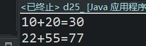
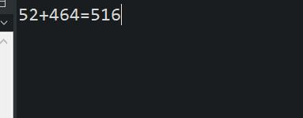

原文连接:https://www.cnblogs.com/ruigege0000/p/11456684.html
一、方法
1.方法的基础语法
（1）例子
//需求1：请编写程序计算10和20的和，并将结果输出
int a = 10;
int b = 20;
System.out.print(a + "+" + b + "=" +(a+b));
System.out.print("\n");
//需求2：请编写程序计算22和55的和，并将计算结果输出
int a1 = 22;
int b1 = 55;
System.out.print(a1 + "+" + b1 + "=" +(a1+b1));

上面的程序虽然实现了功能，但是程序的复用性很差，因此我们需要引入方法的概念（其实就是python中的函数功能）
我们编写方法来重构上面的代码
（2）方法的本质是什么：
方法就是一段代码片段，并且这段代码片段可以完成某个特定的功能，并且可以被重复利用。
（3）方法对应单词：Method
方法再C语言中叫做函数/Function
（4）方法定义在类体之中，一个类中可以定义多个方法，方法编写的位置没有先后顺序，，可以随意，方法体中不能再定义方法！！！
（5）方法体由java语句构成，方法体当中的代码遵守自上而下的顺序依次进行
（6）方法的语法结构
[修饰符列表] 返回值类型 方法名（形式参数列表）{
java语句
}
例子：
public class d25_{
public static void main(String[] args) {
d25_.sumInt(52, 464);
/*
* 以下直接使用方法这种机制
*/
}
//单独定义一个方法来计算上面的两个数字之和,代码得到复用
public static void sumInt(int a ,int b) {
int c = a+b;
System.out.print("\n");
System.out.print(a + "+" + b + "=" + c);
}
}
.修饰符列表：目前先写为public static，后面会讲
注意：方法的修饰符列表之中有static关键字的话，怎么调用这个方法
类名.方法名（实际参数列表）；
ii.返回值：返回值是指一个方法可以完成某个特定的功能，这个功能结束之后大多都是需要返回执行结果的，执行结果可能是一个具体存在的数据，而这个具体存在的数据就是返回值。
iii.返回值类型：返回值是一个具体存在的数据，数据都是有类型的，此处需要指定返回值的具体类型
iv.返回值类型都可以指定哪些类型
java任意一种数据类型都可以，包括基本数据类型和所有的引用数据类型。
v.也可能这个方法执行结束之后不返回任何数据,java中规定，当一个方法执行结束之后返回任何数据的话，返回值类型位置必须写为：void关键字
vi.返回值类型可以是：
byte\short\int\long\float\double\char\boolean\String\void
二、源码：
d25_method_example.java
地址：
https://github.com/ruigege66/Java/blob/master/d25_method_example.java
2.CSDN：https://blog.csdn.net/weixin_44630050（心悦君兮君不知-睿）
3.博客园：https://www.cnblogs.com/ruigege0000/
4.欢迎关注微信公众号：傅里叶变换，后台回复”礼包“，获取大数据学习资料